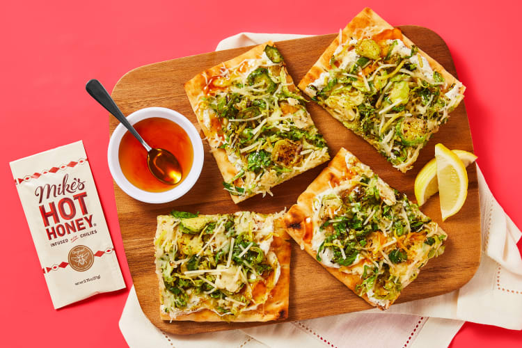

Hot Honey Brussel & Ricotta Flatbreads
In our humble opinion, flatbreads > pizza, any day! We know that may sound blasphemous, but stick with us. First of all, the golden, crispy crust is a veritable blank canvas. It’s not beholden to simply marinara and mozz! In fact, ours is topped with herby lemony ricotta, tender shredded Brussels sprouts, cheese, lemon zest, and a drizzle of hot honey. Can your ’za do that?! Yeah, we didn’t think so.
Ingredients
- 2 Flatbreads
- 4oz Ricotta Cheese
- 8oz Brussels Sprouts
- 1tbs Italian Seasoning
- 3/4oz Mike's Hot Honey
- 1 medium Lemon
- 1/4 cup Parmesan Cheese
- 1/2 cup Italian Cheese Blend
- 2tsp Cooking Oil
- 5tsp Olive Oil
- Salt
- Pepper
Instructions

- • Adjust rack to top position (top and middle positions for 4 servings) and preheat oven to 450 degrees. Wash and dry produce. • Trim and halve Brussels sprouts lengthwise. Lay flat and thinly slice crosswise into shreds.

- • Heat a large drizzle of oil in a large pan over medium-high heat. Add Brussels sprouts; season with ½ tsp Italian Seasoning (1 tsp for 4 servings) and a pinch of salt and pepper. (You’ll use more Italian Seasoning in the next step.) Cook, stirring occasionally, until bright green and softened, 5-7 minutes. • Turn off heat; remove from pan.

- • While Brussels sprouts cook, zest and quarter lemon. • In a small bowl, combine half the lemon zest, ½ cup ricotta (save any remaining for another use), ½ tsp Italian Seasoning (be sure to measure— we sent more), and a squeeze of lemon juice to taste. (For 4 servings, use ¾ of the lemon zest, 1 cup ricotta, and 1 tsp Italian Seasoning.) Stir in 1 TBSP olive oil (2 TBSP for 4) and season with salt and pepper.

- • Place flatbreads on a baking sheet. Brush or rub each with a drizzle of olive oil and season with salt and pepper. • Toast on top rack until golden brown, 3-5 minutes. (For 4 servings, divide flatbreads between 2 baking sheets; toast on top and middle racks, swapping rack positions halfway through baking.)

- • Carefully spread toasted flatbreads with lemon ricotta. Top with a layer of Brussels sprouts. Sprinkle with Italian cheese and half the Parmesan (save the rest for serving). • Bake on top rack until cheese melts and flatbreads are crispy, 4-6 minutes.

- • Cut flatbreads into pieces. • Divide between plates and drizzle with Mike’s Hot Honey. Sprinkle with remaining Parmesan and remaining lemon zest to taste. Serve with any remaining lemon wedges on the side.